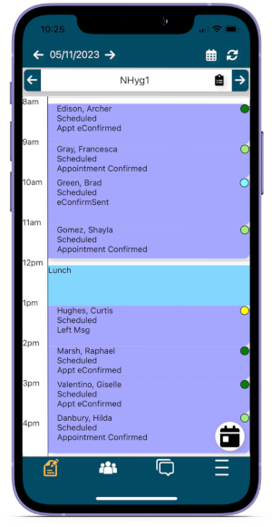

ODMobile Appointments
Manage the daily schedule by viewing, creating, and editing appointments.
In ODMobile, tap the Appts tab.
The Appointments Tab opens by default when the app is opened. It displays the Appointments Module.
Appointments Tab
Operatories associated with the Appointment View display.
- Customize views for ODMobile in the Appointment View Edit window.
- On phone devices, one operatory displays at a time. To view multiple operatories instead, enable the setting, Prefer tablet layout, in ODMobile Settings, Accessibility area.
- On tablet devices, multiple operatories display.
- Use the left and right arrows surrounding the operatory to change the operatory in view.
- Tap the clipboard icon to view appointments for the selected operatory on any selected day.
Use the icons to navigate the Appointments area.
- Use the left and right arrows surrounding the date to go backward or forward by one day.
- Tap the calendar icon in the upper right to change the Appointment View.
- Tap the refresh icon to refresh the screen.
- Tap the calendar icon in the bottom right to enter a specific date to view.
Tap an appointment to view or make edits.
Create an Appointment
To create a new appointment:
- Tap on a blank area of the appointment tab. Tap in the general time frame to schedule the appointment.
- Select the exact time from the list.
- Select the patient by tapping (Select Patient).
- Enter appointment details.
- Tap Save to schedule the appointment.
Reschedule an Appointment
Tap and hold an appointment to move it to another time on the schedule. Alternatively, tap the ellipses on an appointment and select Copy To Pinboard.
The Pinboard icon only displays when dragging an appointment, or when an appointment is already placed on the Pinboard. Drag an appointment to the Pin icon to place it on the Pinboard. Tap the Pinboard Icon to display the Pinboard at the bottom. 
- Clear: Tap to clear the appointment from the Pinboard.
- X: Tap to close the Pinboard display.
- To reschedule an appointment on the same date, drag and drop the appointment to the new time.
- To reschedule an appointment to a new date, drag the appointment to the Pinboard, select the new date, then drag and drop the appointment from the Pinboard to the new date and time.
Delete an Appointment
The Trash icon only displays when dragging an appointment. Drag an appointment to the Trash icon to delete it. A confirmation message displays.
Tap OK to confirm and finish deleting the appointment.
Appointment Edit
Fields available when scheduling or editing an appointment via ODMobile align with the fields on the Edit Appointment window.
To add procedures to an appointment, use Appointment Types.